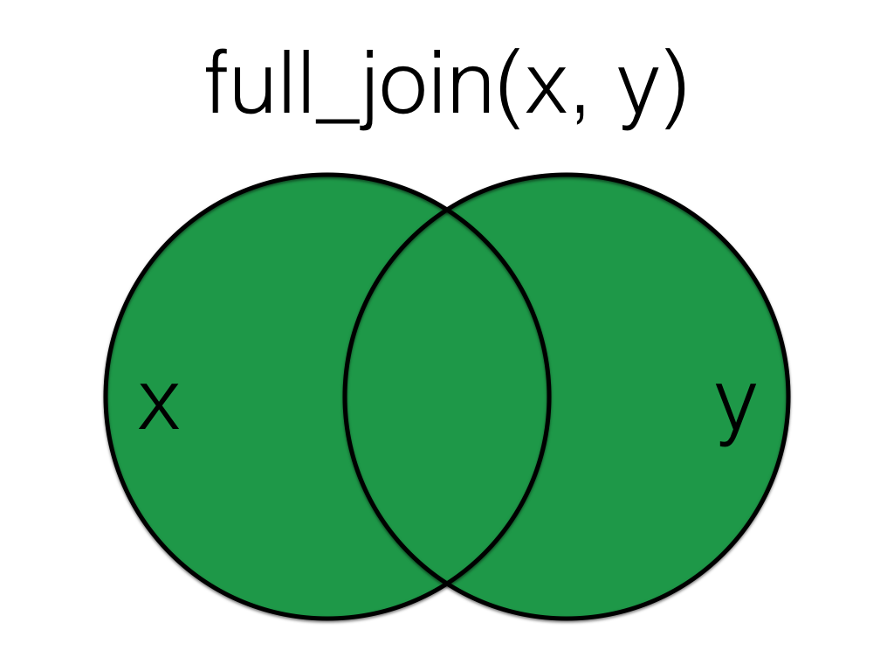

7 Datenbeziehungen
- eingebaut (diese können immer verwendet werden, ohne Pakete zu laden)
- tidyverse (alle diese können mit
library(tidyverse)verwendet werden)- readr::
write_csv(),read_csv() - dplyr::
left_join(),right_join(),inner_join(),full_join(),semi_join(),anti_join(),bind_rows(),bind_cols(),intersect(),union(),setdiff(),mutate() - tibble::
tibble(),as_tibble() - purrr::
map_df() - stringr::
str_replace_all()
- readr::
Bis jetzt haben wir uns jeweils nur mit einer Datenquelle beschäftigt. In der Praxis sind unsere Daten jedoch häufig auf mehrere Quellen verteilt. Erst werden wirklich spannende Datenauswertungen erst durch die Kombination mehrere Datenquellen möglich. Vielleicht interessieren wir uns dafür, wieso ein bestimmtes Produkt in gewissen geografischen Gebieten mehr Absatz findet als in anderen. Um dieser Frage nachzugehen, müssen wir Daten über die Verkaufszahlen mit Daten über die geografischen Gebiete (Anzahl EinwohnerInnen etc.) kombinieren. In diesem Kapitel lernen wir, wie man verschiedene Daten zu einem Datensatz zusammenführen kann.
7.1 Daten laden
Wieder generieren wir zu Übungszwecken einen kleinen übersichtlichen Datensatz. Dies erleichtert es die Berechnungen/Datenmanipulationen nachzuvollziehen. Die Prinzipien sind jedoch, auch für riesige Datensätze, identisch.
Als erstes generieren wir den Datensatz customers
Dieser hat folgende Spalten/Variablen: id, Stadt und Postleitzahl für fünf Kunden 1-5.
-
1:5wird die Variableidmit allen ganzen Zahlen zwischen 1 und 5 füllen. -
cityundcodeverwenden beide die Funktionc(), um mehrere Zeichenketten einzugeben. Beachten Sie, dass jeder Eintrag in eigenen Anführungszeichen steht, abgesehen von fehlenden Daten, die alsNAaufgezeichnet werden. - Bei der Eingabe von Daten auf diese Weise ist es wichtig, dass die Reihenfolge jeder Variable übereinstimmt. Also entspricht die Nummer 1 “Port Ellen” und “PA42 7DU”.
| id | city | postcode |
|---|---|---|
| 1 | Port Ellen | PA42 7DU |
| 2 | Dufftown | AB55 4DH |
| 3 | NA | NA |
| 4 | Aberlour | AB38 7RY |
| 5 | Tobermory | PA75 6NR |
Nehmen wir an, dass wir neben der Datenbank der Kunden auch eine Datenbank der Bestellungen haben, die diese Kunden getätigt haben. Solche Daten werden in der Praxis tatsächlich so (also getrennt) in Datenbanken gespeichert. Wir generieren also einen zweiten Datensatz den wir orders nennen. Dieser Datensatz enthält eine Spalte mit den Kunden-IDs und eine Spalte mit der Anzahl der bestellten Artikel. Einige Kunden aus der vorherigen Tabelle haben keine Bestellungen, manche haben mehr als eine Bestellung und manche sind nicht in der Kundentabelle.
| id | items |
|---|---|
| 2 | 10 |
| 3 | 18 |
| 4 | 21 |
| 4 | 23 |
| 5 | 9 |
| 5 | 11 |
| 6 | 11 |
| 6 | 12 |
| 7 | 3 |
7.2 Mutierende Joins (Verknüpfungen)
Mutierende Joins verhalten sich wie die dplyr::mutate()-Funktion, indem sie neue Spalten zu einer Tabelle auf Basis der Werte in einer anderen Tabelle hinzufügen.
Alle mutierenden Joins haben diese grundlegende Syntax:
****_join(x, y, by = NULL, suffix = c(".x", ".y"))
-
x= die erste (linke) Tabelle -
y= die zweite (rechte) Tabelle -
by= welche Spalten abgeglichen werden sollen. Wenn Sie dies leer lassen, wird es auf allen Spalten mit denselben Namen in den beiden Tabellen abgeglichen. Beobachtungen, die in diesen Spalten die selben Werte haben (z.B. die selbe ID), werden miteinander verknüpft -
suffix= wenn Spalten denselben Namen in beiden Tabellen haben, aber Sie nicht nach ihnen verbinden, erhalten sie ein Suffix, um sie eindeutig zu machen. Dies ist standardmäßig “.x” und “.y”, aber Sie können es in etwas Sinnvolleres ändern.
Sie können das Argument by weglassen, wenn Sie auf allen Spalten mit demselben Namen abgleichen, aber es ist gute Praxis, es immer anzugeben, damit Ihr Code robust gegenüber Änderungen in den geladenen Daten bleibt.
7.2.1 left_join()

Ein left_join behält alle Daten der ersten (linken) Tabelle bei und fügt alles hinzu, was mit der zweiten (rechten) Tabelle übereinstimmt. Die folgende Animation veranschaulicht einen left_join():

Wenn die rechte Tabelle mehr als eine Übereinstimmung für eine Zeile in der linken Tabelle hat, gibt es mehr als eine Zeile in der verbundenen Tabelle (siehe IDs 4 und 5).
| id | city | postcode | items |
|---|---|---|---|
| 1 | Port Ellen | PA42 7DU | NA |
| 2 | Dufftown | AB55 4DH | 10 |
| 3 | NA | NA | 18 |
| 4 | Aberlour | AB38 7RY | 21 |
| 4 | Aberlour | AB38 7RY | 23 |
| 5 | Tobermory | PA75 6NR | 9 |
| 5 | Tobermory | PA75 6NR | 11 |

Die Reihenfolge, in der Sie die Tabellen angeben, ist wichtig. Im folgenden Code haben wir die Reihenfolge umgekehrt, sodass das Ergebnis alle Zeilen aus der orders-Tabelle enthält, die mit den passenden Zeilen aus der customers-Tabelle verbunden sind.
7.2.2 right_join()

Ein right_join behält alle Daten der zweiten (rechten) Tabelle bei und fügt alles hinzu, was mit der ersten (linken) Tabelle übereinstimmt. Die folgende Animation veranschaulicht einen right_join:
| id | city | postcode | items |
|---|---|---|---|
| 2 | Dufftown | AB55 4DH | 10 |
| 3 | NA | NA | 18 |
| 4 | Aberlour | AB38 7RY | 21 |
| 4 | Aberlour | AB38 7RY | 23 |
| 5 | Tobermory | PA75 6NR | 9 |
| 5 | Tobermory | PA75 6NR | 11 |
| 6 | NA | NA | 11 |
| 6 | NA | NA | 12 |
| 7 | NA | NA | 3 |
Diese Tabelle enthält dieselben Informationen wie left_join(orders, customers, by = "id"), aber die Spalten sind in einer anderen Reihenfolge (zuerst linke Tabelle, dann rechte Tabelle).
7.2.3 inner_join()

Ein inner_join gibt alle Zeilen zurück, die in beiden Tabellen eine Übereinstimmung haben. Das Ändern der Reihenfolge der Tabellen ändert die Reihenfolge der Spalten, aber nicht, welche Zeilen erhalten bleiben.
Die folgende Animation veranschaulicht einen inner_join:
7.2.4 full_join()

Ein full_join ermöglicht es, Zeilen in zwei Tabellen zu verbinden und dabei alle Informationen aus beiden Tabellen zu behalten. Wenn eine Zeile in der anderen Tabelle keine Übereinstimmung hat, werden die Spaltenwerte der anderen Tabelle auf NA gesetzt.
Die folgende Animation veranschaulicht einen full-join:

7.3 Filternde Joins
Filternde Joins verhalten sich wie die dplyr::filter()-Funktion, indem sie Zeilen aus den Daten in einer Tabelle auf Basis der Werte in einer anderen Tabelle behalten oder entfernen. Das Ergebnis eines filternden Joins enthält nur Zeilen aus der linken Tabelle und hat dieselbe Anzahl oder weniger Zeilen wie die linke Tabelle.
7.3.1 semi_join()

Ein semi_join gibt alle Zeilen aus der linken Tabelle zurück, bei denen es passende Werte in der rechten Tabelle gibt, wobei nur Spalten aus der linken Tabelle beibehalten werden.
Die Folgende Animation veranschaulicht einen semi_join:

| id | city | postcode |
|---|---|---|
| 2 | Dufftown | AB55 4DH |
| 3 | NA | NA |
| 4 | Aberlour | AB38 7RY |
| 5 | Tobermory | PA75 6NR |
Im Gegensatz zu einem inner_join wird ein semi_join niemals die Zeilen in der linken Tabelle duplizieren, wenn es mehr als eine passende Zeile in der rechten Tabelle gibt.

Da nur die Spalten der Linken Tabelle erhalten bleiben, ist die Reihenfolge bei einem semi_join wichtig.
7.3.2 anti_join()

Ein anti_join gibt alle Zeilen aus der linken Tabelle zurück, bei denen es keine passenden Werte in der rechten Tabelle gibt, wobei nur Spalten aus der linken Tabelle beibehalten werden.
Die folgende Animation veranschaulicht einen anti-join:

| id | city | postcode |
|---|---|---|
| 1 | Port Ellen | PA42 7DU |
Die Reihenfolge ist wichtig bei einem anti join.

7.4 Verknüpfung von mehr als zwei Tabellen
Die ****_join()-Funktionen sind alles Zwei-Tabellen-Verben, das heißt, Sie können jeweils nur zwei Tabellen miteinander verbinden. Wenn man jedoch mehrere Tabellen verbinden musst, kann man einfach weitere Joins hinzufügen. Dies kann man tun, indem man ein Zwischenobjekt erstellt oder effizienter durch die Verwendung einer Pipe:
# erstelle eine Tabelle mit Gesamtkundenzufriedenheitswerten
satisfaction <- tibble(
id = 1:5,
satisfaction = c(4, 3, 2, 3, 1)
)
# führe den ersten Join durch
join_1 <- left_join(customers, orders, by = "id")
# führe den zweiten Join am neuen Objekt durch
join_2 <- left_join(join_1, satisfaction,
by = "id")Auf jeder Stufe einer Analyse sollte man die Ausgabe überprüfen, um sicherzustellen, dass das, was man erstellt hat, auch das ist, was man beabsichtigt hat. Dies gilt insbesondere für Joins. Man sollte die Zwischenschritte durch routinemäßige Überprüfungen mit Funktionen wie glimpse(), str(), und summary() anschauen, um eine grobe Vorstellung davon zu haben, was der Join ergeben sollte. Mindestens sollte man wissen, ob das verbundene Objekt zu mehr oder weniger Variablen und Beobachtungen führen sollten.
Wenn Sie einen mehrzeiligen Join wie im obigen piped Beispiel haben, bauen Sie den Code schrittweise auf und überprüfen Sie die Ausgabe auf jeder Stufe.
7.5 Bindende Joins
Bindende Joins binden eine Tabelle an eine andere, indem sie ihre Zeilen oder Spalten zusammenfügen.
7.5.1 bind_rows()
Mit der Funktion bind_rows kann man die Zeilen von zwei Tabellen mit zusammenfügen. Hier fügen wir Kundendaten für die Kunden 6-9 hinzu und verbinden diese mit der ursprünglichen Kundentabelle.
new_customers <- tibble(
id = 6:9,
city = c("Falkirk", "Ardbeg", "Doogal", "Kirkwall"),
postcode = c("FK1 4RS", "PA42 7EA", "G81 4SJ", "KW15 1SE")
)
bindr_data <- bind_rows(customers, new_customers)
bindr_data| id | city | postcode |
|---|---|---|
| 1 | Port Ellen | PA42 7DU |
| 2 | Dufftown | AB55 4DH |
| 3 | NA | NA |
| 4 | Aberlour | AB38 7RY |
| 5 | Tobermory | PA75 6NR |
| 6 | Falkirk | FK1 4RS |
| 7 | Ardbeg | PA42 7EA |
| 8 | Doogal | G81 4SJ |
| 9 | Kirkwall | KW15 1SE |
Die Spalten müssen nur dieselben Namen haben, sie müssen nicht in der gleichen Reihenfolge sein. Alle Spalten, die nicht in beiden Tabellen enthalten sind, haben einfach NA-Werte für Einträge aus der anderen Tabelle.
Wenn eine Zeile in beiden Tabellen vorkommt, wird die Zeile in der resultierenden Tabelle doppelt vorkommen. Wenn Ihre Tabellen genau dieselben Spalten haben, können Sie union() verwenden, um Duplikate zu vermeiden (werden wir gleich sehen).
new_customers <- tibble(
id = 5:9,
postcode = c("PA75 6NR", "FK1 4RS", "PA42 7EA", "G81 4SJ", "KW15 1SE"),
city = c("Tobermory", "Falkirk", "Ardbeg", "Doogal", "Kirkwall"),
new = c(1,2,3,4,5)
)
bindr2_data <- bind_rows(customers, new_customers)
bindr2_data| id | city | postcode | new |
|---|---|---|---|
| 1 | Port Ellen | PA42 7DU | NA |
| 2 | Dufftown | AB55 4DH | NA |
| 3 | NA | NA | NA |
| 4 | Aberlour | AB38 7RY | NA |
| 5 | Tobermory | PA75 6NR | NA |
| 5 | Tobermory | PA75 6NR | 1 |
| 6 | Falkirk | FK1 4RS | 2 |
| 7 | Ardbeg | PA42 7EA | 3 |
| 8 | Doogal | G81 4SJ | 4 |
| 9 | Kirkwall | KW15 1SE | 5 |
7.5.2 bind_cols()
Man kann Tabellen auch mit der Funktion bind_cols zusammenführen. Dies sollte man jedoch nur tun, wenn beide Tabllen die gleiche Anzahl Zeilen haben und diese genau die selbe Reihenfolge haben. Diese Funktion ist also mit Vorsicht zu geniessen und im Zweifelsfall sollte für solche Operationen eine Funktion wie left_join verwendet werden.
new_info <- tibble(
colour = c("red", "orange", "yellow", "green", "blue")
)
bindc_data <- bind_cols(customers, new_info)
bindc_data | id | city | postcode | colour |
|---|---|---|---|
| 1 | Port Ellen | PA42 7DU | red |
| 2 | Dufftown | AB55 4DH | orange |
| 3 | NA | NA | yellow |
| 4 | Aberlour | AB38 7RY | green |
| 5 | Tobermory | PA75 6NR | blue |
Der einzige Vorteil von bind_cols() gegenüber einem mutierenden Join besteht darin, wenn die Tabellen keine IDs zum Verbinden haben und Sie sich ausschließlich auf ihre Reihenfolge verlassen müssen. Ansonsten sollten Sie einen mutierenden Join verwenden (alle vier mutierenden Joins ergeben das gleiche Ergebnis, wenn alle Zeilen in jeder Tabelle genau eine Übereinstimmung in der anderen Tabelle haben).
7.6 Mengenoperationen
Mengenoperationen vergleichen zwei Tabellen und geben Zeilen zurück, die übereinstimmen (intersect), in einer der beiden Tabellen sind (union) oder in einer Tabelle, aber nicht in der anderen sind (setdiff).
7.6.1 intersect()
dplyr::intersect() gibt alle Zeilen in zwei Tabellen zurück, die genau übereinstimmen. Die Spalten müssen nicht in derselben Reihenfolge sein, müssen aber dieselben Namen haben.
new_customers <- tibble(
id = 5:9,
postcode = c("PA75 6NR", "FK1 4RS", "PA42 7EA", "G81 4SJ", "KW15 1SE"),
city = c("Tobermory", "Falkirk", "Ardbeg", "Doogal", "Kirkwall")
)
intersect_data <- intersect(customers, new_customers)
intersect_data| id | city | postcode |
|---|---|---|
| 5 | Tobermory | PA75 6NR |
Wenn Sie vergessen haben, dplyr oder das tidyverse zu laden, hat base R auch eine base::intersect()-Funktion, die nicht wie dplyr::intersect() funktioniert. Die Fehlermeldung kann verwirrend sein und sieht ungefähr so aus:
7.6.2 union()
dplyr::union() gibt alle Zeilen aus beiden Tabellen zurück und entfernt dabei, im Gegensatz zu bind_rows(), doppelte Zeilen.
| id | city | postcode |
|---|---|---|
| 1 | Port Ellen | PA42 7DU |
| 2 | Dufftown | AB55 4DH |
| 3 | NA | NA |
| 4 | Aberlour | AB38 7RY |
| 5 | Tobermory | PA75 6NR |
| 6 | Falkirk | FK1 4RS |
| 7 | Ardbeg | PA42 7EA |
| 8 | Doogal | G81 4SJ |
| 9 | Kirkwall | KW15 1SE |
Wenn Sie vergessen haben, dplyr oder das tidyverse zu laden, hat base R auch eine base::union()-Funktion. Sie erhalten normalerweise keine Fehlermeldung, aber das Ergebnis wird nicht das sein, was Sie erwarten.
[[1]]
[1] 1 2 3 4 5
[[2]]
[1] "Port Ellen" "Dufftown" NA "Aberlour" "Tobermory"
[[3]]
[1] "PA42 7DU" "AB55 4DH" NA "AB38 7RY" "PA75 6NR"
[[4]]
[1] 5 6 7 8 9
[[5]]
[1] "PA75 6NR" "FK1 4RS" "PA42 7EA" "G81 4SJ" "KW15 1SE"
[[6]]
[1] "Tobermory" "Falkirk" "Ardbeg" "Doogal" "Kirkwall" 7.6.3 setdiff()
dplyr::setdiff gibt Zeilen zurück, die in der ersten Tabelle, aber nicht in der zweiten Tabelle sind.
| id | city | postcode |
|---|---|---|
| 1 | Port Ellen | PA42 7DU |
| 2 | Dufftown | AB55 4DH |
| 3 | NA | NA |
| 4 | Aberlour | AB38 7RY |
Die Reihenfolge ist wichtig für setdiff.
| id | postcode | city |
|---|---|---|
| 6 | FK1 4RS | Falkirk |
| 7 | PA42 7EA | Ardbeg |
| 8 | G81 4SJ | Doogal |
| 9 | KW15 1SE | Kirkwall |
Wenn Sie vergessen haben, dplyr oder das tidyverse zu laden, hat base R auch eine base::setdiff()-Funktion. Sie erhalten normalerweise keine Fehlermeldung, aber das Ergebnis ist möglicherweise nicht das, was Sie erwarten, weil base::setdiff() erwartet, dass die Spalten in derselben Reihenfolge sind, sodass die ID 5 hier als unterschiedlich zwischen den beiden Tabellen registriert wird.
7.7 Konflikte bei Variablentypen
Beim Verbinden von Datensätzen anhand gemeinsamer Spalten ist es wichtig, dass nicht nur die Variablennamen identisch sind, sondern auch der Datentyp dieser Variablen identisch ist.
Um das zu veranschaulichen, erstellen wir unseren new_customers-Datenset erneut, aber diesmal spezifizieren wir, dass id eine character-Variable ist.
new_customers2 <- tibble(
id = as.character(5:9),
postcode = c("PA75 6NR", "FK1 4RS", "PA42 7EA", "G81 4SJ", "KW15 1SE"),
city = c("Tobermory", "Falkirk", "Ardbeg", "Doogal", "Kirkwall")
)
str(new_customers2)tibble [5 × 3] (S3: tbl_df/tbl/data.frame)
$ id : chr [1:5] "5" "6" "7" "8" ...
$ postcode: chr [1:5] "PA75 6NR" "FK1 4RS" "PA42 7EA" "G81 4SJ" ...
$ city : chr [1:5] "Tobermory" "Falkirk" "Ardbeg" "Doogal" ...Wenn wir versuchen, diesen Datensatz mit einem der anderen Datensätze zu verbinden, in denen id als numeric-Variable gespeichert ist, wird ein Fehler erzeugt.
Dasselbe gilt für bind_rows():
Um dies zu vermeiden, müssen wir den Datentyp einer der beiden Variablen ändern. Dies kann man unter anderem mit den folgenden Funktionen tun:
-
as.numeric()- konvertiert eine Variable zunumeric. Nützlich, wenn Sie eine Variable aus Zahlen haben, die als Zeichen codiert wurden. Alle Werte, die nicht in Zahlen umgewandelt werden können (z. B. wenn Sie das Wort “missing” in Zellen haben, für die Sie keine Daten haben), werden alsNAzurückgegeben. -
as.factor()- konvertiert eine Variable zu einemfactor. Sie können die Faktorstufen und -labels manuell festlegen oder die Standardreihenfolge (alphabetisch) verwenden. -
as.character()- konvertiert eine Variable zucharacter-Daten.
Um diese Funktionen auf eine Variable anzuwenden, können wir mutate() verwenden, um die Variable mit dieser Variablen als dem neuen Datentyp zu überschreiben:
Sobald wir dies getan haben, funktionieren die Joins nun:
7.8 Übungen
Es gibt viele verschiedene Anwendungsfälle für die ****_join()-Funktionen. Diese Übungen ermöglichen es Ihnen, verschiedene Joins zu üben. Wenn Sie Beispiele haben, wo Joins in Ihrer eigenen Arbeit hilfreich sein könnten, teilen Sie diese bitte im Teams im Kanal der Woche 6 mit, da viele konkrete Beispiele dabei helfen können, zwischen den verschiedenen Joins zu unterscheiden.
7.8.1 Notendaten
Das Bewertungsschema Schedule A der Universität Glasgow verwendet eine 22-stufige alphanumerische Skala (weitere Informationen finden Sie in Ihrem zusammenfassenden Bericht Bewertungsinformationsblatt). Jede alphanumerische Note (z. B. B2) hat einen zugrunde liegenden numerischen Notenpunkt (z. B. 16).
Oft, wenn wir mit Studentennoten arbeiten, werden sie uns nur in einer dieser Formen zur Verfügung gestellt, aber wir müssen in der Lage sein, zwischen den beiden zu wechseln. Zum Beispiel benötigen wir die numerische Form, um deskriptive Statistiken über die Durchschnittsnote berechnen zu können, aber wir benötigen die alphanumerische Form, um sie den Studentenakten freizugeben.
Laden Sie grade_data.csv, grade_data2.csv und scheduleA.csv in Ihren Datenordner.
Lesen Sie
scheduleA.csvein und speichern Sie es in einem Objekt namensschedule.Lesen Sie
grade_data1.csvein und speichern Sie es in einem Objekt namensgrades1.Lesen Sie
grade_data2.csvein und speichern Sie es in einem Objekt namensgrades2.
7.8.2 Übereinstimmung der Variablentypen
An der UofG erhält jeder Student eine GUID, eine numerische ID-Nummer. Diese ID-Nummer wird jedoch auch mit dem ersten Buchstaben Ihres Nachnamens kombiniert, um Ihren Benutzernamen zu erstellen, der zusammen mit Ihrer E-Mail-Adresse verwendet wird. Wenn beispielsweise Ihre ID 1234567 lautet und Ihr Nachname Nordmann ist, lautet Ihr Benutzername 1234567n. Aus Sicht der Datenbereinigung ist dies sehr ärgerlich, da die numerische ID als numerische Daten gespeichert wird, der Benutzername jedoch als Zeichen aufgrund des Buchstabens am Ende gespeichert wird. grades1 hat eine numerische ID, während grades2 den zusätzlichen Buchstaben hat. Um diese Datensätze zu verbinden, müssen wir die Variablen standardisieren.
Zuerst entfernen Sie den Buchstaben aus id mit der Funktion stringr::str_replace_all(), die Text ersetzt, der einem Muster entspricht. Hier verwenden wir das Muster "[a-z]", das alle Kleinbuchstaben a bis z findet, und ersetzen sie mit "". Siehe die Hilfe für ?about_search_regex für weitere Informationen darüber, wie man Muster festlegt (diese können wirklich komplex werden).
Nun transformieren Sie den Datentyp von id, damit er mit dem Datentyp in grades2 übereinstimmt.
7.8.3 Vollständige Datensätze
In diesem Beispiel möchten wir die Notendaten mit Schedule A verbinden, sodass jeder Student mit einer Note sowohl die Note als auch den Notenpunkt hat. Wir möchten aber auch einen vollständigen Datensatz aller Kursteilnehmer haben, also sollten Studenten mit fehlenden Noten trotzdem in den Daten enthalten sein.
- Verbinden Sie
grades1undscheduleAund speichern Sie diese Tabelle in einem Objekt namensexam_all. - Machen Sie dasselbe für
grades2und speichern Sie es inessay_all. - Sowohl
exam_allals auchessay_allsollten 100 Beobachtungen von 4 Variablen haben.
Hinweis: Sie möchten alle Daten aus grade_data1 und grade_data2 behalten, aber Sie möchten nur die alphanumerischen Noten aus schedule für die Notenpunktwerte, die in grades vorhanden sind. Z. B., wenn niemand ein F1 verliehen wurde, sollten Ihre endgültigen Datensätze das nicht enthalten.
7.8.4 Fehlende Daten
Alternativ möchten Sie möglicherweise einen Datensatz haben, der nur Daten für Studenten enthält, die jede Bewertung eingereicht haben und eine Note haben. Zuerst führen Sie summary() sowohl auf exam_all als auch auf essay_all aus.
- Wie viele Prüfungsnoten fehlen?
- Wie viele Aufsatznoten fehlen?
Nun erstellen Sie ein Objekt exam_grades, das grades1 und schedule zusammenführt, aber diesmal sollte das resultierende Objekt nur Daten von Studenten enthalten, die eine Note haben. Machen Sie dasselbe für grades2 und speichern Sie es in essay_grades.
Bevor Sie dies tun, angesichts dessen, was Sie über die Anzahl der fehlenden Datenpunkte in jedem Datensatz wissen:
- Wie viele Beobachtungen sollte
exam_gradeshaben? - Wie viele Beobachtungen sollte
essay_gradeshaben?
Hide: Es ist erwähnenswert, dass Sie in der Realität nicht tatsächlich zu den Rohdaten zurückkehren und einen weiteren Join durchführen würden, um diesen Datensatz zu erhalten, sondern Sie könnten einfach alle fehlenden Antworten entfernen, indem Sie %>% drop_na() zu exam_all und essay_all hinzufügen. Wir werden dies jedoch aus didaktischen Gründen auf diese etwas künstliche Weise tun.
Nun erstellen Sie einen Datensatz completes, der die Noten für Studenten verbindet, die sowohl für den Aufsatz als auch für die Prüfung eine Note haben.
- Da sowohl
exam_gradesals auchessay_gradesdie VariablenAssessment,PointsundGradeshaben, die gleich benannt sind, aber unterschiedliche Daten haben, sollten Sie das Suffix ändern, damit die resultierenden VariablenPoints_examundPoints_essayusw. benannt sind. Sie müssen möglicherweise die Hilfedokumentation konsultieren, um ein Beispiel zu sehen, um dies herauszufinden. - Bereinigen Sie die Datei mit
select()und behalten Sie nur die Variablenid,Grade_examundGrade_essay
- Wie viele Studenten haben eine Note für sowohl die Prüfung als auch den Aufsatz?
N
un erstellen Sie einen Datensatz no_essay, der Studenten enthält, die eine Note für die Prüfung haben, aber nicht für den Aufsatz.
- Wie viele Studenten haben eine Note für die Prüfung, aber nicht für den Aufsatz?
Schließlich erstellen Sie nun einen Datensatz no_exam, der Studenten enthält, die eine Note für den Aufsatz haben, aber nicht für die Prüfung
- Wie viele Studenten haben eine Note für den Aufsatz, aber nicht für die Prüfung?
7.8.5 Teilen auf Teams
Wenn Sie fertig sind, teilen Sie Ihre gestrickte HTML-Datei und die Rmd-Datei für die Übungen auf Teams im Kanal der Woche 07.
7.9 Weiterführende Ressourcen
- Data transformation cheatsheet
- Kapitel 19: Joins in R für Datenwissenschaft
- Kapitel 26: Iteration in R für Datenwissenschaft.
- purrr cheatsheet